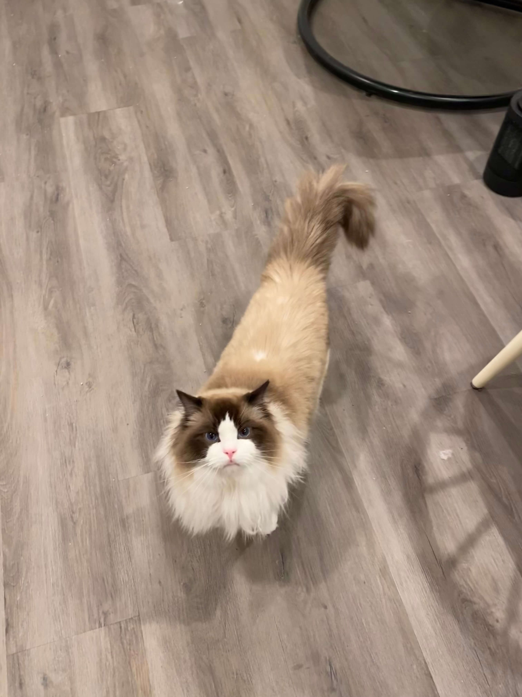
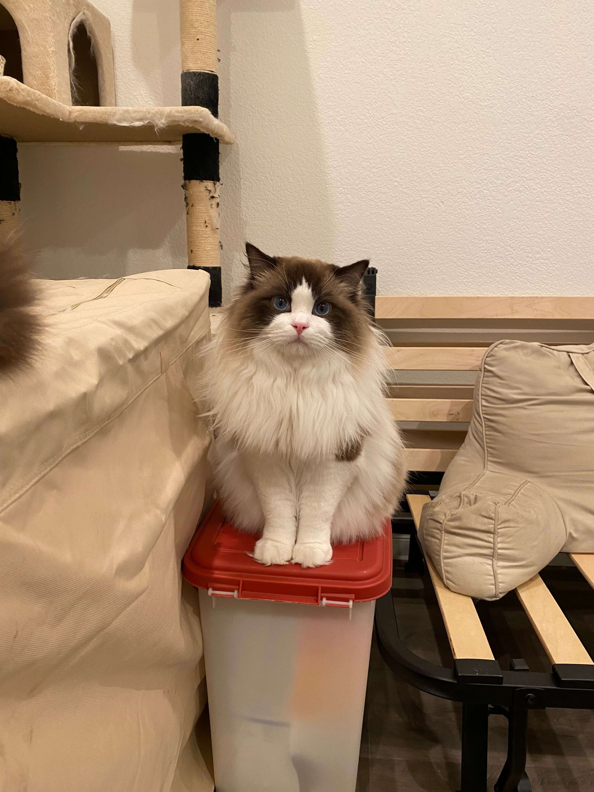
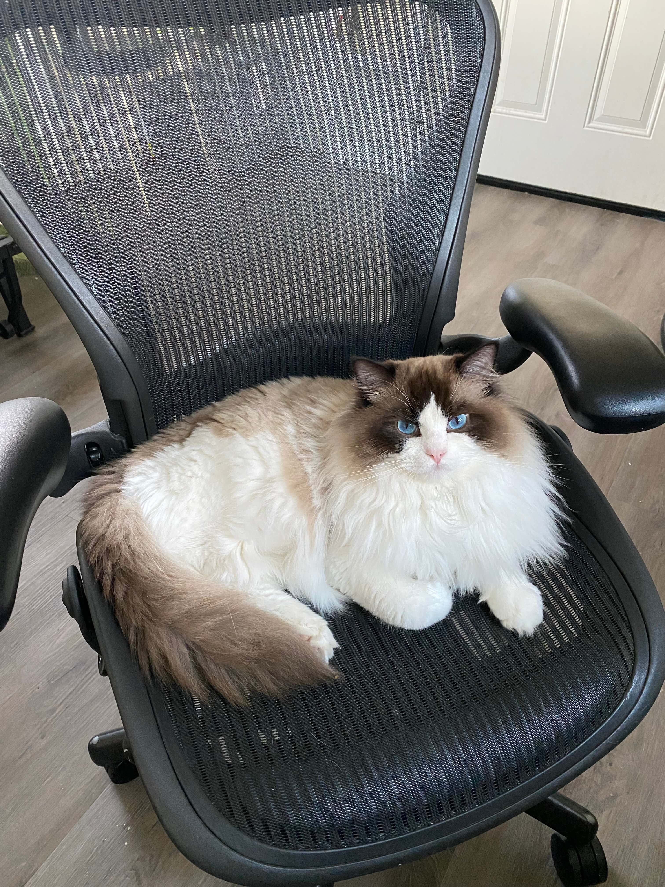
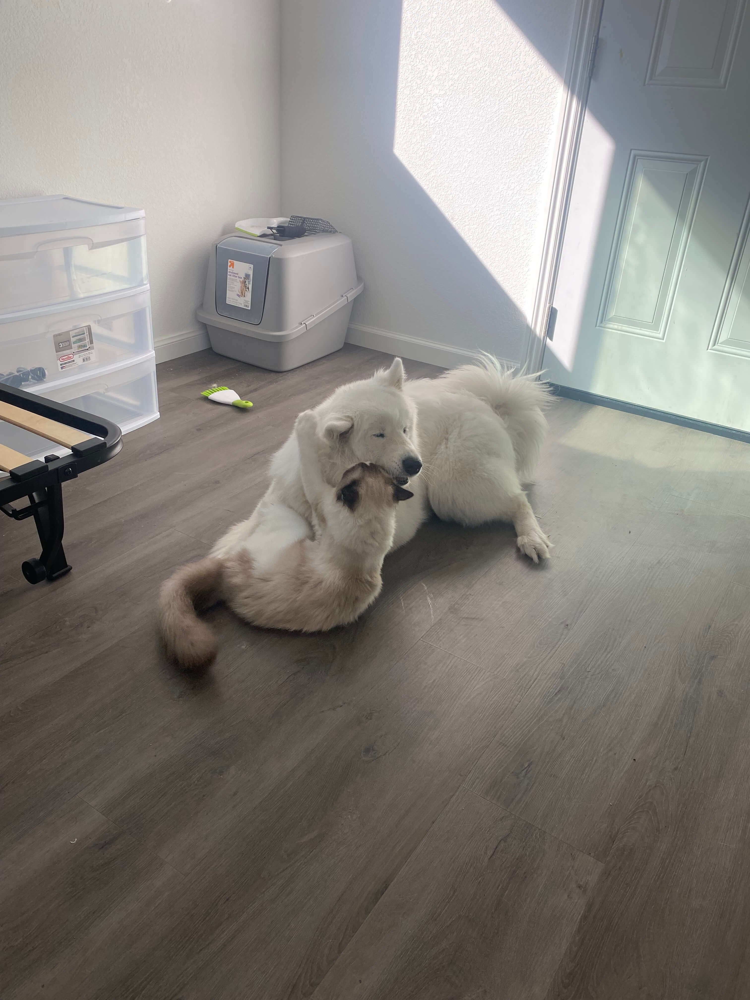
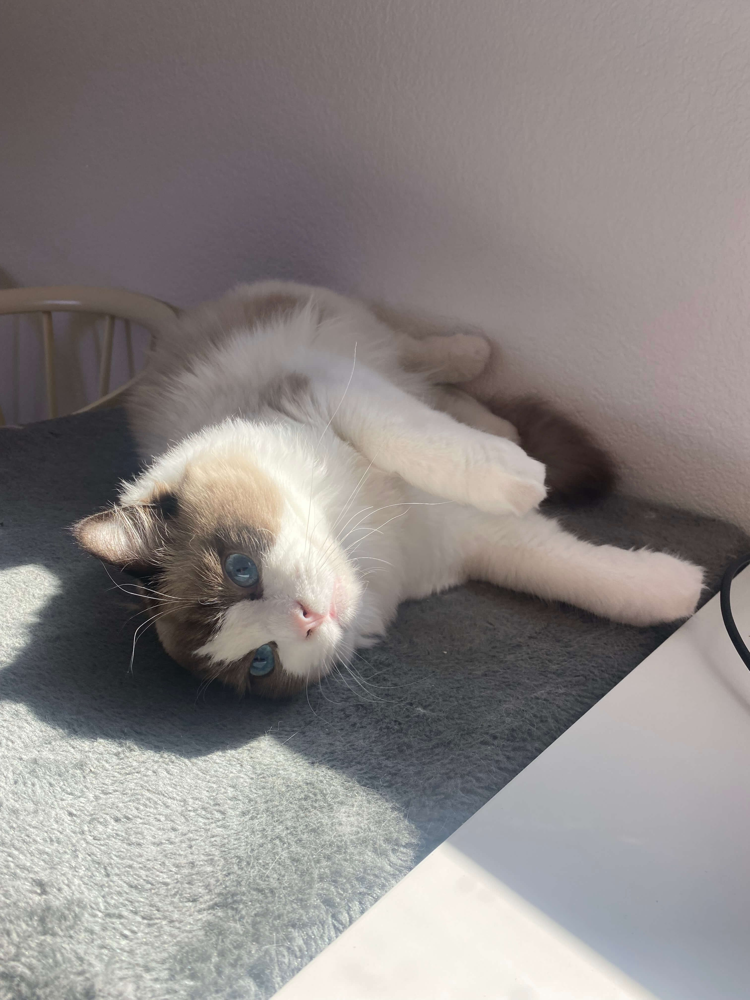
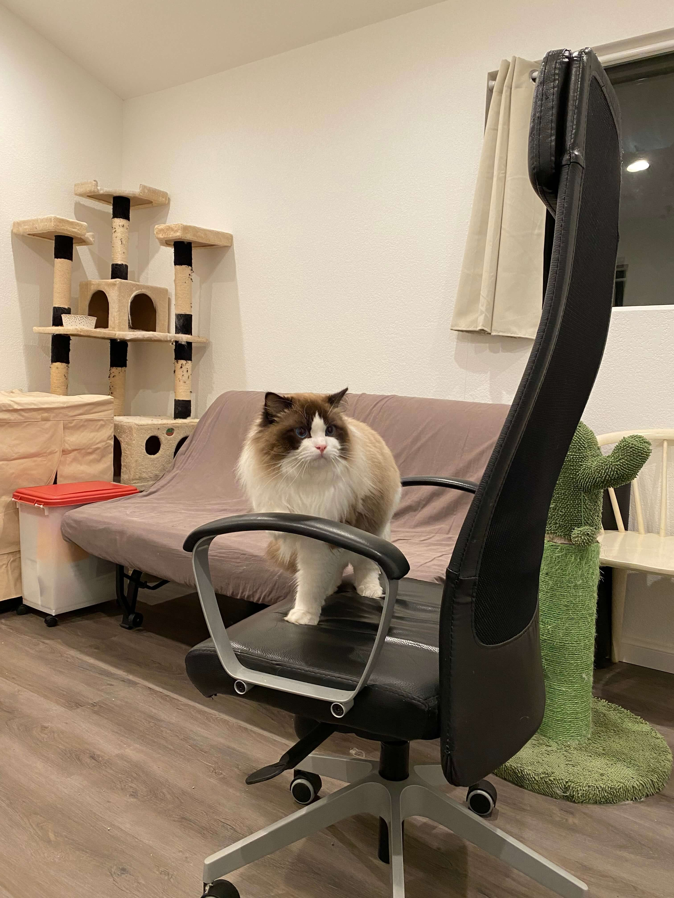

We are a Bay Area ragdoll cattery. Get your ragdoll kittens now!
King Windermere: Seal Bicolor
  Borned in Nov. 2020, Windermere was the biggest of his litter. I feel in love with him the first time I saw him. He is a dog-like cat. He loves human and he always follows you around. Whenever you sit down, you can find him climing into your lap and purring really loudly.



Windermere loves dogs. He and my Samoyed Walwal are best friends. Everyday you can find them playing together. Sometimes Windermere plays like a dog, while sometimes Walwal plays like a cat. It's really hard to focus on whatever you are doing while these two are having so much fun right next to you.